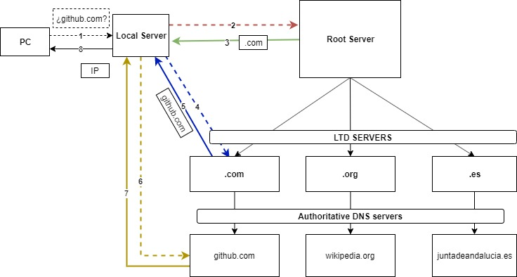
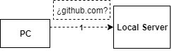
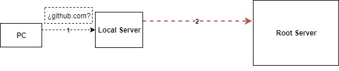
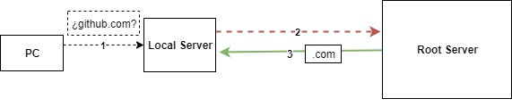
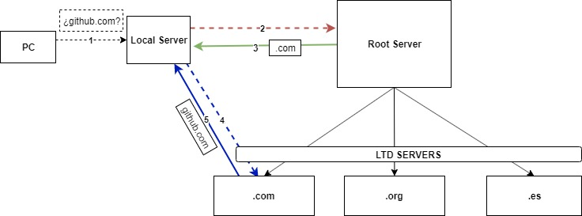

DNS
Cuesta, SebastiánPérez, Jorge
Ruiz, Alexis
Ruiz, Victor
DNS
Historia DNSDNS
Esquema básico de funcionamiento de DNS 
El servicio de nombres de dominios se basa en un sistema de búsquedas recursivas a través de una jerarquía de servidores.
La búsqueda comienza por nuestro equipo, quien no conoce la IP del domínio al que se va a conectar, por lo que lanza una pregunta al servidor que tenga configurado.(1)
Este servidor es el que, en caso de no conocer la IP buscada, comienza la búsqueda recursiva que acaba llegando a un Root Server.(2)
El Root Server devuelve la dirección del LTD Server en el que se encuentra el dominio buscado.(3)
El Servidor local vuelve a preguntar al LTD Server que le ha pasado el Root Server, y este le devuelve el servidor autorativo en el que se encuentra el dominio. (4,5)
Por último el servidor local pregunta a la dirección que le ha pasado el servidor autoritativo y esta le devuelve la dirección IP que buscaba.(7,8)
DNS
DNSSECCon DNSSEC, no son las consultas y respuestas DNS en sí mismas las que están firmadas criptográficamente, sino que los datos DNS en sí están firmados por el propietario de los datos.
- El navegador del visitante comprueba los servidores DNS asociados al dominio.
- Si las firmas digitales públicas que recibe coinciden con las publicadas en el Registry, el navegador dará por válida la solicitud y resolverá el sitio web, mostrando su contenido.
- Si por alguna razón las firmas no coinciden, el sitio web no sería accesible.

- La autenticación del origen de los datos permite que un solucionador verifique criptográficamente que los datos recibidos realmente provienen de donde se originaron los datos.
- La protección de la integridad de los datos le permite al solucionador saber que los datos no se han modificado en el tránsito, ya que el propietario de la zona lo firmó originalmente con la clave privada.